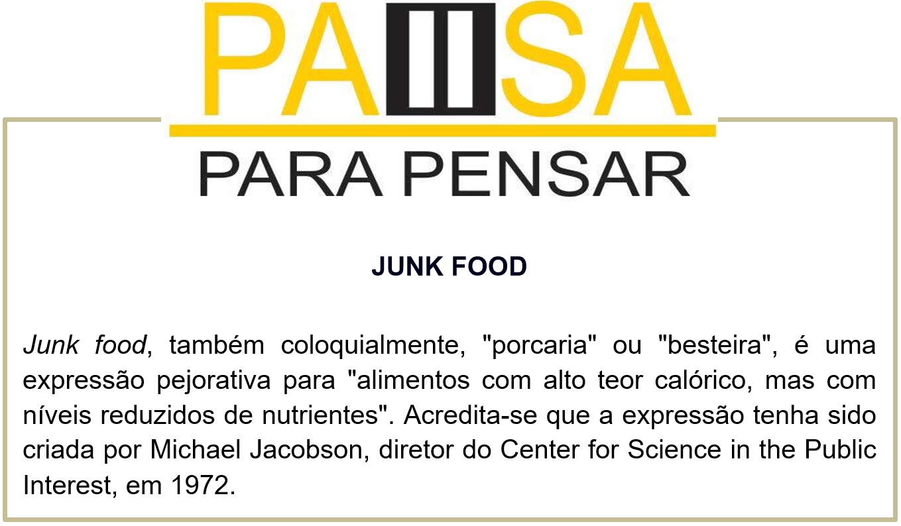

Capítulo 5: Food and Drink - Comida e Bebida
What do you eat? O que você come?
Is it health or unhealthy? É saudável ou não?
Vamos conhecer novas palavras relacionada a alimentação e a saúde.
Em geral as palavras ligadas a saúde e alimentação são muito semelhantes com o português.
Certamente você consegue entender boa parte do texto.
Contextualizando - Pictionary sobre food and drinks


Assista ao vídeo para aprender mais sobre alimentação saudável
Reconstruindo conhecimentos – Passado contínuo
O passado contínuo é usado para se referir a uma situação que estava em andamento em um determinado momento do passado. A construção do passado contínuo deve ser dada segundo a forma:
Sujeito + verbo “to be” no passado (was/were) + verbo com “ing” + complemento
She was working yesterday night. (Ela estava trabalhando ontem à noite).
He was working at the college. (Ele estava trabalhando na universidade).
Para a forma negativa, basta acrescentar o “not” após o passado do verbo “to be”(was/were):
They were not studying when I arrived home. (Eles não estavam estudando quando eu cheguei em casa).
I was not traveling last week. (Eu não estava viajando semana passada).
Para elaborar uma frase interrogativa é necessário colocar o passado do verbo “to be” (was/were) no início da frase:
Was Bob riding a horse with his friends on the farm yesterday? (O Bob estava andando a cavalo com seus amigos na fazenda ontem?)
Were you two dancing during the P.E. class yesterday? (Vocês dois estavam dançando durante a aula de Educação Física ontem?)
Aplicando ao nosso vocabulário
I was eating grapes. Eu estava comendo uvas.
We were drinking orange juice. Nós estávamos bebendo suco de laranja.
You were doing diet. Você estava fazendo dieta.
My mom was making a chocolate cake. Minha mãe estava fazendo um bolo de chocolate.
O que aprendi
• Utilizar o passado contínuo;
• Expandimos o vocabulário alimentar;
• Expandimos conhecimentos sobre alimentação saudável;
• Aprendemos a origem da expressão junk food.
Retomando: Observe o quadro resumo do passado contínuo
Praticando
Analise as imagens e classifique os alimentos em: H – healthy (saudável) U – unhealthy (não saudável)
Produza frases com o passado contínuo utilizando o vocabulário alimentar. Utilize os verbos fornecidos.
drinking (bebendo) – buying (comprando) – eating (comendo) – making (fazendo) – cutting (cortando)
I was drinking strawberry juice. Eu estava tomando suco de morango.
____________________________
____________________________
____________________________
____________________________